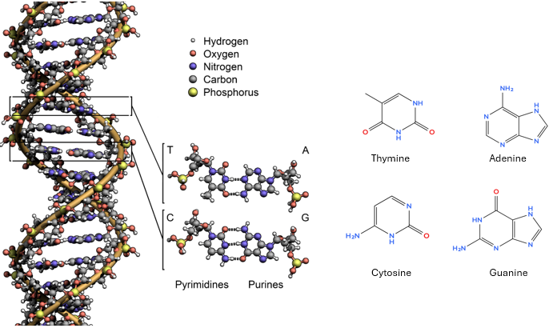

Introduction to Genes and DNA#
Life depends on the ability of cells to store, copy, and pass on information. DNA is the molecule that carries this information across generations while also directing the daily activities of the cell. It acts as a blueprint for building and maintaining life, ensuring that each new cell or offspring can pick up where the previous one left off.
The blueprint is written in a chemical code of four bases, arranged in sequences that define genes. Different organisms have different sets of genes, just as each species requires unique instructions to survive and thrive. To make use of these instructions, cells first copy DNA into RNA through transcription, and then use RNA to build proteins through translation. This orderly flow of information, from DNA → RNA → Protein, is the Central Dogma of Molecular Biology, as first articulated by Francis Crick in his 1970 Nature article, which describes the flow of genetic information in biological systems.
Genes are particular stretches of DNA that contain the information to produce RNA and, ultimately, proteins—the molecular machines and structures that make cells function. To use this information, cells must first copy the relevant portion of DNA into a temporary working version called RNA in a process known as transcription.
In this section, we will:
Introduce the structure and role of DNA.
Explain what genes are and how they are organized in DNA.
Describe how cells “read” DNA through transcription.
This foundation prepares us for the next step—translation—where RNA guides the synthesis of proteins. It also connects directly to how you will encounter biological information in cheminformatics. In PubChem, genes and proteins are not abstract ideas but central data types, linked to compounds, BioAssays, pathways, and even taxonomies and cell lines. Although humans are estimated to have around 20,000 “protein coding” genes, PubChem contains data from multiple species, including lab animals commonly tested in preclinical studies, annotations from multiple sources and large-scale RNA interference (RNAi) experiments, a method where small RNA molecules block specific genes from making their proteins. The result is that PubChem currently tracks over 160,000 genes and more than 250,000 proteins, alongside millions of compounds and nearly two million BioAssays (PubChem Statistics).
Understanding transcription is therefore not only a matter of cell biology—it is also about recognizing how biological information becomes searchable, cross-referenced, and integrated with chemical data in PubChem.
1. DNA as the Genetic Material#
Historical Perspective#
The idea that DNA is the carrier of hereditary information is relatively recent in science. In the early 20th century, proteins were thought to be the most likely candidates because of their structural complexity. However, key experiments shifted this view:
Griffith’s Transformation Experiment (1928): Showed that a “transforming principle” could pass traits between bacteria.
Avery, MacLeod, and McCarty (1944): Identified DNA as that transforming principle.
Hershey–Chase Experiment (1952): Confirmed that DNA, not protein, carried genetic instructions in viruses that infect bacteria.
These discoveries established DNA as the hereditary material—the molecule that passes information from one generation to the next.
DNA’s Chemical Composition#
Chemists can think of DNA as a type of polymer built from repeating monomers called nucleotides. Each nucleotide has three components:
A sugar (D-2-deoxyribose, β-D-furanose form).
A phosphate group, which links sugars together, forming the DNA backbone.
A nitrogenous base, which varies among four types: thymine (T) and cytosine (C) are pyrimidines (single- ring nitrogenous bases) and adenine (A) and guanine (G) are purines (double-ring nitrogenous bases)
The sequence of these bases forms the code of DNA. Just as changing the order of atoms in a molecule changes its properties, changing the order of bases changes the information stored.
The Double Helix and Base Pairing#
In 1953, James Watson and Francis Crick proposed the double helix structure of DNA (building on Rosalind Franklin’s X-ray diffraction data). DNA consists of two strands twisted around each other, with bases paired in the middle like rungs of a ladder.
Adenine (A) pairs with Thymine (T) through two hydrogen bonds.
Cytosine (C) pairs with Guanine (G) through three hydrogen bonds.
This complementary base pairing allows DNA to be copied accurately during cell division, since each strand serves as a template for the other.

DNA base pair CC3.0 Zephyris, Wikimedia Commons remixed by Belford
{kind=link}
Use the following import function and settings to render the images in a Jupyter notebook. The smiles for the β-D-Deoxyribofuranose is provided and you should complete the data list to cover the 4 bases and the phosphate group.
Activity 1: RDKit Exercise#
import pandas as pd
from rdkit import Chem
from rdkit.Chem import PandasTools
from rdkit.Chem.Draw import IPythonConsole
# Jupyter rendering settings
IPythonConsole.ipython_useSVG = True
PandasTools.RenderImagesInAllDataFrames(images=True)
# Define SMILES for DNA parts
data = [
("β-D-Deoxyribofuranose", "C1[C@H](O)[C@@H](CO)[C@H](O)[C@H]1"), # β-D-furanose
]
Why DNA is Stable?#
DNA is remarkably well-suited for long-term information storage:
Chemical stability of deoxyribose: The absence of a hydroxyl group at the 2′ position (compared to RNA’s ribose) makes DNA less prone to hydrolysis.
Double-stranded structure: Protects bases from damage and provides redundancy for repair.
Packaging with proteins (histones): In eukaryotes, DNA is tightly wound into chromosomes, shielding it further.
Together, these features explain why DNA, and not RNA or protein, is the long-term storage medium of genetic information.
2. Genome to Gene: How DNA is Organized#
The Genome#
Every organism has a genome: the complete set of DNA instructions that make up its genetic material.
In humans, the genome is divided into 46 chromosomes (23 pairs).
Each chromosome is a long DNA molecule packaged with proteins.
The genome is like a cookbook, with each chromosome as a chapter.
Within that genome, the fundamental units of information are genes.
GENOME
│ The complete set of DNA instructions for an organism
│ (all chromosomes together; the "whole cookbook")
│
├── CHROMOSOME
│ A single long DNA molecule packaged with proteins
│ (like a "chapter" in the cookbook)
│
├──── GENE
│ A defined segment of DNA that provides instructions
│ for making RNA (and usually proteins)
│ (like a single "recipe" in the chapter)
│
├────── ALLELE
│ A variant form of a gene with slight sequence differences
│ (like alternate versions of the recipe — e.g. with more sugar)
│
└──────── TRAIT
The observable outcome of gene expression
(the final dish that results from following the recipe)
What is a Gene?#
A gene is a defined segment of DNA that contains the instructions for making an RNA molecule. Sometimes the RNA itself is functional (like rRNA or tRNA), but often it serves as a template for building a protein.
A gene is more than just a “protein recipe”: it’s an operational unit of information, with regions that:
provide the coding blueprint,
control when and where the gene is used, and
signal where the process should start and stop.
Anatomy of a Gene (Eukaryotic Example)#
A typical protein-coding gene contains:
Promoter region – a “landing pad” for proteins that start transcription.
Exons – coding sequences that will eventually specify amino acids.
Introns – noncoding regions spliced out of the RNA.
Regulatory elements – sequences (sometimes far away) that control gene activity.
Terminator sequence – signals the end of transcription.
Genes as Units of Information#
Each gene occupies a defined location (locus) on a chromosome.
Different versions of the same gene are called alleles. They have slightly different DNA sequences, which can result in the same or different traits.
The sequence of bases (A, T, G, C) in the gene encodes instructions, just like a recipe written with a four-letter alphabet.
Genes, Traits, and Proteins#
Genes connect to traits through proteins. For example, a gene might contain the instructions for an enzyme that helps make a pigment, which gives a flower its color. So the path is: DNA (gene) → RNA → Protein → Trait. This is the high-level framework for how genetic information becomes physical characteristics.
3. Genomics Databases and Gene Nomenclature#
Genomics Databases#
NCBI Gene – a curated database of genes as information units, including their names, identifiers (GeneID), genomic locations, and links to proteins, sequences, and literature. It’s the entry point for understanding a gene biologically and informatically.
GenBank – a comprehensive archive of raw nucleotide sequences submitted by researchers worldwide. It’s the broad, historical record of DNA and RNA sequences, including redundancies and multiple versions.
RefSeq – NCBI’s curated reference sequence collection, providing a high-quality, non-redundant set of DNA, RNA, and protein sequences linked to known genes. It’s the authoritative reference you use when you want a stable, reliable sequence instead of a raw submission.
Ensembl (EMBL-EBI, Wellcome Sanger Institute) - Comprehensive genome browser and database, parallel to NCBI Gene. Offers detailed gene models, comparative genomics, and variant data.
[UCSC Genome Browserhttps://genome.ucsc.edu/) - Visualization-heavy genome database widely used in genetics and genomics. Great for exploring regulatory regions and annotations on top of a genome.
Gene nomenclature#
In humans, official gene names and symbols are maintained by the HUGO Gene Nomenclature Committee (HGNC).
Each gene has a short symbol (like TP53) and a descriptive full name (tumor protein p53).
Other organisms have their own committees or conventions (for example, yeast and mouse genes use different capitalization rules).
Gene symbols are often distinct from protein names: the TP53 gene encodes the p53 protein.
Database identifiers#
Even with standardized names, synonyms and historical names remain in use. Databases rely on identifiers to keep things consistent:
NCBI Gene assigns a stable GeneID to each gene.
GenBankand NCBI RefSeq use accession numbers for sequences.
UniProt assigns identifiers to protein records.
These identifiers never change, even if the official gene name is updated.
Sequence Search: BLAST#
When you have an unknown DNA, RNA, or protein sequence, the most common way to identify it is to compare it against a database of known sequences. NCBI provides a tool for this called BLAST (Basic Local Alignment Search Tool).
BLAST takes your query sequence and finds the most similar entries in databases like GenBank, RefSeq, or UniProt.
It performs local alignments, which means it can detect short regions of similarity even if the full sequence is not identical.
This is useful for:
Identifying which gene or protein your sequence belongs to.
Finding related genes in other organisms.
Predicting possible function of an unknown sequence by similarity to known ones.
Types you might encounter:
blastn – nucleotide vs. nucleotide database.
blastp – protein vs. protein database.
blastx / tblastn / tblastx – for translating between DNA and protein comparisons.
BLAST is integrated into NCBI databases, so from a Gene or Protein record you can often launch a BLAST search to explore related sequences.
Genes in PubChem#
Although PubChem is first and foremost a chemical database, it is deeply connected to the genomics resources you’ve just seen. PubChem integrates biological data through the concept of targets — usually proteins, but ultimately encoded by genes.
A PubChem BioAssay often measures how a chemical interacts with a protein (for example, whether it activates, inhibits, or binds to it).
Since each protein is the product of a gene, these assays naturally connect chemicals to genes.
PubChem doesn’t define the gene itself — instead, it relies on stable identifiers from NCBI Gene, RefSeq, and UniProt to cross-link chemistry with biology.
In this way, PubChem serves as a portal: you can begin with a chemical and, through its targets, navigate into the gene, protein, and sequence records stored in NCBI and other biological databases.
So when you view a gene in PubChem, you’re really seeing how it functions in a chemical and biological context — bridging the informatics of molecules (chemistry) with the informatics of sequences (biology).
4. From DNA to RNA: Transcription#
What is transcription?#
Transcription is the process of making an RNA copy of a gene’s DNA sequence. It’s like taking a recipe out of the cookbook (the genome) and writing it on a notecard (RNA) so the kitchen (cell) can use it. The key point is that the information is the same, but the chemical form is different: DNA → RNA. It is the RNA that is used to make proteins in the process known as translation.
If DNA contains all the instructions, why bother making RNA at all? The answer lies in the nature of DNA. DNA’s primary role is to serve as the stable, long-term archive of genetic information. Subjecting it to the high-traffic environment of protein synthesis would risk introducing damage or errors into the permanent record. Instead, the cell protects DNA inside the nucleus (in eukaryotes) or in compact structures (in bacteria), and makes temporary RNA copies to carry the instructions outward. RNA acts as a working copy — quick to make, quick to use, and quick to degrade — while DNA stays safe in the archive.
Base Pair Mapping: DNA → RNA#
When RNA polymerase copies DNA, it reads the DNA template strand and builds a complementary RNA strand. The RNA strand is synthesized in the 5′ to 3′ direction, meaning new nucleotides are added to the 3′ end of the growing RNA chain. The RNA polymerase uses complementary base-pairing rules like DNA — but with one important difference: RNA uses uracil (U) instead of thymine (T).
DNA Base |
RNA Complement |
Notes |
|---|---|---|
Adenine (A) |
Uracil (U) |
DNA has T, RNA uses U instead |
Thymine (T) |
Adenine (A) |
T only in DNA |
Cytosine (C) |
Guanine (G) |
Same as DNA pairing |
Guanine (G) |
Cytosine (C) |
Same as DNA pairing |
For example, if the DNA template strand reads:
DNA template: 3' – T A C G G A T T C – 5'
RNA transcript: 5' – A U G C C U A A G – 3'
This is the mRNA codon sequence that will later be read by the ribosome during translation.
Key players#
DNA template – the source information. One strand of the DNA double helix serves as the template.
RNA polymerase – the enzyme that reads DNA and builds the RNA strand.
RNA molecules produced (brief preview, details later):
mRNA (messenger RNA): carries protein-building instructions.
tRNA (transfer RNA): brings amino acids to the ribosome.
rRNA (ribosomal RNA): structural and functional part of the ribosome.
Steps of transcription#
Initiation
RNA polymerase binds to the promoter region of the gene.
The DNA double helix unwinds, exposing the template strand.
Elongation
RNA polymerase moves along the DNA, adding complementary RNA nucleotides (A pairs with U, C pairs with G).
The RNA strand grows in the 5′ → 3′ direction.
Termination
At the end of the gene, termination signals tell RNA polymerase to stop.
The completed RNA molecule is released from the DNA.
In eukaryotes, three main classes of RNA are generated,RNA polymerase II makes mRNA, RNA polymerase I makes most rRNA, and RNA polymerase III makes tRNA and some rRNA.
Messenger RNA (mRNA)#
Transcribed from protein-coding genes by RNA polymerase II.
In eukaryotes, the first product is a pre-mRNA, which must be processed before use:
5′ capping – adds a protective guanine cap at the start.
Splicing – the spliceosome removes introns and joins exons. The spliceosome is a large RNA–protein complex that removes introns — it is not a single enzyme but a molecular machine with catalytic RNA activity.
3′ polyadenylation – adds a poly-A tail for stability and export.
The result is mature mRNA, which leaves the nucleus and is translated into protein.
Transfer RNA (tRNA)#
Transcribed from tRNA genes by RNA polymerase III.
Fold into their characteristic cloverleaf structure through base pairing.
Processed by trimming and chemical modification of bases before becoming active.
Function: carry amino acids to the ribosome, matching them to codons in mRNA during translation.
Ribosomal RNA (rRNA)#
Transcribed from rRNA genes (mostly by RNA polymerase I, except 5S rRNA by RNA polymerase III).
Processed and assembled with proteins inside the nucleolus.
Together with ribosomal proteins, rRNAs form the structural and catalytic core of ribosomes.
Function: provide the physical platform and enzymatic activity for protein synthesis.
The following 2:45 minute Youtube uploaded by Arman Hossain provides a visual overview of transcription and post-transcriptional processing occur to form mRNA.
%%html
<iframe width="560" height="315" src="https://www.youtube.com/embed/_Zyb8bpGMR0?si=aHXFLE96JWCHUcsa" title="YouTube video player" frameborder="0" allow="accelerometer; autoplay; clipboard-write; encrypted-media; gyroscope; picture-in-picture; web-share" referrerpolicy="strict-origin-when-cross-origin" allowfullscreen></iframe>
RNA Transport#
In eukaryotic cells, transcription and RNA processing occur inside the nucleus, but protein synthesis takes place in the cytoplasm. This means that RNAs must be transported through the nuclear envelope to reach their final destinations. Movement happens through nuclear pore complexes (NPCs), which act like gated channels. RNAs cannot diffuse freely; they need specific proteins to guide them.
mRNA export#
Only mature mRNA (with a cap, poly-A tail, and properly spliced exons) is recognized for export.
Export proteins bind to the mRNA and guide it through nuclear pore complexes.
Once in the cytoplasm, the export proteins are released and the mRNA is ready for translation.
tRNA export#
After being processed and chemically modified in the nucleus, tRNAs are bound by export factors.
They are transported through nuclear pores so they can participate in translation in the cytoplasm.
rRNA export#
Ribosomal RNAs are assembled with ribosomal proteins in the nucleolus to form large and small ribosomal subunits.
These subunits are exported separately through nuclear pores.
Once in the cytoplasm, they come together to form complete ribosomes.
With transcription complete, and RNAs processed where needed, the cell now has the instructions (mRNA) and the tools (tRNA and rRNA) ready for the next stage: protein synthesis.
5. Regulation of Transcription#
Cells do not transcribe DNA into RNA indiscriminately. Instead, they regulate gene expression through a class of proteins known as transcription factors. This regulation ensures that the right genes are activated or repressed in response to internal and external signals.
Transcription Factors#
Transcription factors are proteins that bind to specific DNA sequences to control the transcription of genetic information from DNA to RNA. They can act as activators, enhancing transcription, or repressors, inhibiting it. By recognizing short DNA motifs in promoter or enhancer regions, they allow cells to regulate gene expression in response to signals. A common mechanism involves ligand–protein interactions: when a small-molecule ligand binds to a transcription factor, it induces a conformational change that alters the protein’s activity. In biology these ligands are often referred to as hormones, growth factors, or other signaling molecules. Broadly speaking, transcription factors fall into two main types, which we will examine next.
Two Broad Types of Transcription Factors#
General (or basal) transcription factors These are proteins required for the transcription of nearly all genes. They assemble at the promoter near the transcription start site and form a complex with RNA polymerase II, the enzyme that synthesizes messenger RNA. Because they provide the basic transcriptional machinery shared across most genes, they are referred to as basal transcription factors.
Regulatory transcription factors Unlike general transcription factors, which are universally required for transcription, regulatory transcription factors act in a more selective and dynamic way. They control only certain genes and often change their activity in response to signals such as hormones, stress, or developmental cues. Depending on context, they may function as either activators or repressors of transcription. These factors typically bind to DNA sequences—such as enhancers, silencers, or response elements—that can be located near the gene they regulate or at more distant sites within the genome. This positioning allows them to integrate multiple signals and fine-tune gene expression in a highly specific manner.
Thyroid Hormone Receptor (TR)#
The thyroid hormone receptor (TR) is a classic example of a regulatory transcription factor that functions through ligand–protein interactions. TR belongs to the nuclear hormone receptor family, a group of transcription factors that respond directly to small-molecule ligands. In the case of TR, the natural ligand is triiodothyronine (T3), a hormone derived from the thyroid gland.
When TR is not bound to T3, it usually associates with co-repressor proteins, which keep target genes in an inactive state. Binding of T3 induces a conformational change in TR that releases co-repressors and allows the recruitment of co-activators. This switch converts TR from a transcriptional repressor to an activator, increasing transcription of thyroid hormone–responsive genes.
Because TR directly couples the presence of a small-molecule ligand (T3) to changes in gene expression, it is an important target in pharmacology and toxicology. Many drug candidates and environmental chemicals act as ligands or ligand mimics, altering TR activity in ways that may differ between species. Exploring TR activity in both rats and humans—such as through PubChem bioassays—highlights the challenge of species concordance and provides a valuable opportunity to analyze how experimental results may or may not translate across organisms.
6. Relevance of Transcription to Disease and Toxicology#
1. DNA damage and transcriptional interference#
Carcinogens like benzo[a]pyrene (from cigarette smoke) form bulky DNA adducts that block RNA polymerase from reading genes correctly.
UV radiation induces thymine dimers, distorting DNA and stalling transcription.
Chemotherapy drugs such as cisplatin create DNA crosslinks that interfere with both replication and transcription.
2. Toxins that directly inhibit RNA polymerase#
α-Amanitin (from the death cap mushroom) binds tightly to RNA polymerase II and blocks mRNA synthesis. This halts protein production and leads to cell death.
Actinomycin D intercalates into DNA and prevents RNA polymerase progression. It has been used as a chemotherapeutic drug.
3. Diseases of transcription machinery#
Mutations in transcription factors or RNA polymerase subunits can cause developmental disorders. For example, mutations in TFIIH subunits are linked to xeroderma pigmentosum (sensitivity to UV, cancer predisposition).
Splicing defects contribute to diseases like spinal muscular atrophy (SMA), caused by mutations in the SMN1 gene required for spliceosome assembly.
4. Disruption of transcriptional regulation#
Many diseases arise not from damage to DNA itself, but from misregulation of transcription factors.
Thyroid hormone receptor (TR) is a classic example: TR normally binds the hormone triiodothyronine (T3) and regulates genes controlling metabolism, development, and growth.
If TR signaling is disrupted—by mutations, environmental chemicals, or inappropriate hormone levels—the wrong genes are turned on or off.
Hypothyroidism: insufficient thyroid hormone leads to reduced TR-mediated transcription, causing developmental delays and metabolic disorders.
Endocrine disruption: some pollutants mimic or block thyroid hormones, altering TR activity in species-specific ways. This makes cross-species comparisons of TR assays crucial in toxicology.
Other transcription factor–related diseases include cancers driven by overactive MYC or estrogen receptor signaling.
Activity#
Case Studies: Chemicals, Transcription, and Disease#
Example |
What it targets |
Biological effect |
Relevance |
|---|---|---|---|
α-Amanitin (toxin from the death cap mushroom Amanita phalloides) |
RNA polymerase II |
Blocks mRNA synthesis → no protein production |
Deadly hepatotoxin; classic example of a small molecule that directly stops transcription |
Cisplatin (anticancer drug) |
DNA (crosslinking) |
Prevents DNA from being unwound and transcribed |
Used in chemotherapy; exploits transcription interference to kill rapidly dividing cells |
Actinomycin D (antibiotic/anticancer agent) |
DNA (intercalation) |
Stops RNA polymerase movement |
Historically important drug, still used in pediatric cancer therapy |
Nusinersen (Spinraza®, therapeutic oligonucleotide) |
RNA splicing machinery (SMN2 gene) |
Corrects splicing defect in spinal muscular atrophy (SMA) |
FDA-approved drug that shows how targeting RNA processing can treat disease |
import requests
from rdkit import Chem
from rdkit.Chem import Draw
cid = 457193 # D-ACTINOMYCIN
# Ask PubChem for the *new* property names
url = (
f"https://pubchem.ncbi.nlm.nih.gov/rest/pug/compound/cid/{cid}/property/"
"IUPACName,MolecularFormula,MolecularWeight,SMILES,ConnectivitySMILES/JSON"
)
data = requests.get(url).json()
props = data["PropertyTable"]["Properties"][0]
print("Actinomycin D (CID:", cid, ")")
print("IUPAC Name:", props.get("IUPACName"))
print("Molecular Formula:", props.get("MolecularFormula"))
print("Molecular Weight:", props.get("MolecularWeight"))
# New names:
print("SMILES (isomeric):", props.get("SMILES"))
print("Connectivity SMILES (no stereo):", props.get("ConnectivitySMILES"))
# Draw from isomeric SMILES if present, else fall back
smi = props.get("SMILES") or props.get("ConnectivitySMILES")
mol = Chem.MolFromSmiles(smi) if smi else None
if mol:
display(Draw.MolToImage(mol, size=(300, 300)))
else:
print("No SMILES returned to render.")
Actinomycin D (CID: 457193 )
IUPAC Name: 2-amino-4,6-dimethyl-3-oxo-1-N,9-N-bis[(3R,6S,7R,10S,16S)-7,11,14-trimethyl-2,5,9,12,15-pentaoxo-3,10-di(propan-2-yl)-8-oxa-1,4,11,14-tetrazabicyclo[14.3.0]nonadecan-6-yl]phenoxazine-1,9-dicarboxamide
Molecular Formula: C62H86N12O16
Molecular Weight: 1255.4
SMILES (isomeric): C[C@@H]1[C@@H](C(=O)N[C@@H](C(=O)N2CCC[C@H]2C(=O)N(CC(=O)N([C@H](C(=O)O1)C(C)C)C)C)C(C)C)NC(=O)C3=C4C(=C(C=C3)C)OC5=C(C(=O)C(=C(C5=N4)C(=O)N[C@H]6[C@H](OC(=O)[C@@H](N(C(=O)CN(C(=O)[C@@H]7CCCN7C(=O)[C@H](NC6=O)C(C)C)C)C)C(C)C)C)N)C
Connectivity SMILES (no stereo): CC1C(C(=O)NC(C(=O)N2CCCC2C(=O)N(CC(=O)N(C(C(=O)O1)C(C)C)C)C)C(C)C)NC(=O)C3=C4C(=C(C=C3)C)OC5=C(C(=O)C(=C(C5=N4)C(=O)NC6C(OC(=O)C(N(C(=O)CN(C(=O)C7CCCN7C(=O)C(NC6=O)C(C)C)C)C)C(C)C)C)N)C
import requests
cid = 457193 # D-Actinomycin
# Step 1: Get linked assay IDs
aids_url = f"https://pubchem.ncbi.nlm.nih.gov/rest/pug/compound/cid/{cid}/aids/JSON"
aids_resp = requests.get(aids_url).json()
aids = []
if "InformationList" in aids_resp:
info = aids_resp["InformationList"]["Information"]
for entry in info:
if "AID" in entry:
aids.extend(entry["AID"])
print(f"Found {len(aids)} assays for CID {cid}")
# Step 2: Fetch metadata for the first few assays
for aid in aids[:5]:
assay_url = f"https://pubchem.ncbi.nlm.nih.gov/rest/pug/assay/aid/{aid}/description/JSON"
assay_resp = requests.get(assay_url).json()
if "AssayDescription" in assay_resp:
desc = assay_resp["AssayDescription"][0]
name = desc.get("Name", "No name")
print(f"AID {aid}: {name}")
print(f" Link: https://pubchem.ncbi.nlm.nih.gov/bioassay/{aid}#cid={cid}")
Found 1465 assays for CID 457193
import requests, io, pandas as pd, time
from IPython.display import display, HTML
def get_dyads_for_cid(cid, aids, max_assays=10):
"""
Return a DataFrame of AID–SID dyads for a given CID across selected AIDs.
Ensures SID and AID are integers so the Dyad URLs work.
"""
rows = []
for i, aid in enumerate(aids[:max_assays], start=1):
url = f"https://pubchem.ncbi.nlm.nih.gov/rest/pug/assay/aid/{aid}/record/CSV"
resp = requests.get(url)
if not resp.ok:
continue
df = pd.read_csv(io.StringIO(resp.text))
# Look for CID and SID columns
cid_col = next((c for c in df.columns if c.upper() in ("PUBCHEM_CID","CID")), None)
sid_col = next((c for c in df.columns if c.upper() in ("PUBCHEM_SID","SID")), None)
if cid_col is None or sid_col is None:
continue
# Ensure integer types (not floats with .0)
df[cid_col] = df[cid_col].astype("Int64")
df[sid_col] = df[sid_col].astype("Int64")
# Keep only rows matching this CID
df = df[df[cid_col] == cid]
for sid in df[sid_col].unique():
sid = int(sid)
dyad_url = f"https://pubchem.ncbi.nlm.nih.gov/bioassay/{aid}#sid={sid}"
rows.append((int(aid), sid, dyad_url))
# Throttle every 5 requests to stay under PubChem’s rate limits
if i % 5 == 0:
time.sleep(1)
return pd.DataFrame(rows, columns=["AID", "SID", "DyadURL"])
# === Example usage ===
cid = 457193 # D-Actinomycin
# 'aids' should be your earlier list of assay IDs
subset_aids = aids[1454:] # just the first 10 to test
dyad_df = get_dyads_for_cid(cid, subset_aids, max_assays=10)
# Show full URLs (no truncation)
pd.set_option("display.max_colwidth", None)
#display(dyad_df)
def make_clickable(val):
return f'<a href="{val}" target="_blank">{val}</a>'
dyad_df_style = dyad_df.style.format({"DyadURL": make_clickable})
display(HTML(dyad_df_style.to_html()))